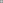
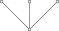
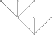
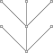
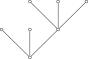
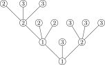
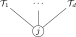
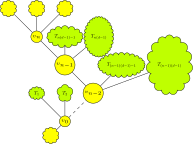
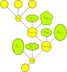

3 Aspekt kombinatoryczny
Definicja 3.1 Dla \(p\in\mathbb{N}\) niech \(C_p\) oznacza zbiór wszystkich ukorzenionych, planarnych, pełnych drzew \(d\)-arnych o \(p\) liściach (każdy wewnętrzny wierzchołek ma dokładnie \(d\) dzieci).
Przykład 3.1 Niech \(d=3\). Wówczas \(C_1\) składa się z jednego drzewa

\(C_2 = \emptyset\). Natomiast \(C_3\) ma jeden element

\(C_4=\emptyset\) a \(C_5\) składa się z trzech drzew



Dla drzewa \(T\) będziemy rozważać kolorowanie jego wierzchołków \(c \colon V(T) \to \{1,2, \ldots ,n\}\) przy pomocy \(n\) kolorów. Tutaj \(V(T)\) oznacza zbiór wierzchołków drzewa \(T\). Parę \[ \mathcal{T}=(c,T),\qquad c:V(T)\to [n] \] Nazywać będziemy pokolorowanym drzewem Catalana.
Definicja 3.2 Zbiór wszystkich drzew Catalana o \(p\) liściach pokolorowanych w taki sposób, że korzeń ma kolor \(j\) oznaczać będziemy przez \[ \mathcal{C}^{(j)}_p = \{\, \mathcal{T}=(c,T) : T \in C_p,\; c(\mathrm{root}(T))=j \,\}. \]
Przykład 3.2 Poniższe drzewo jest elementem \(\mathcal{C}^{(1)}_7\)
Wykorzystamy drzewa Catalana aby znaleść reprezentację odwrotnej of \(F\). W tym celu przyjmiemy jeszcze jedno oznaczenie
Definicja 3.3 Dla pokolorowanego drzewa Catalana \(\mathcal{T} = (c,T)\) kładziemy \[ \omega(\mathcal{T}) \;=\; \prod_{v\in V_{\mathrm{int}}(T)} \frac{h_{\kappa(v)}^{(c(v))}}{d!}\, \prod_{v\in V_{\mathrm{ext}}(T)} X_{c(v)} \in \mathbb{C}[X_1, \ldots, X_n], \] gdzie \(\kappa(v) = (\kappa(v)_j)_{j \leq n}\), \(\kappa(v)_j\) liczba dzieci \(v\) koloru \(j\)
Przykład 3.3 Niech \(\mathcal{T}\in \mathcal{C}_7^{(1)}\) będzie dane przez

Wówczas \[\begin{equation*} \omega(\mathcal{T})=\frac{h^{(1)}_{111}}{3!}\frac{h^{(1)}_{030}}{3!} \frac{h^{(2)}_{003}}{3!} \frac{h^{(2)}_{012}}{3!} X_2^3 X_3^6 \end{equation*}\]
Oznaczmy zbiór wszystkich pokolorowanych drzew Catalana z korzeniem koloru \(j\) przez
\[ \mathcal{C}^{(j)} = \bigcup_{p\geq 1} \mathcal{C}^{(j)}_p. \] Dla \(i\leq n\) definiujemy szereg formalny \(G_i \in \mathcal{C}[[X]]\) poprzez \[ G_j \;=\; \sum_{\mathcal{T}\in \mathcal{C}^{(j)}} \omega(\mathcal{T}) \in \mathbb{C}[[X_1, \ldots, X_n]]. \] Niech \[ G=(G_1,\dots,G_n) \in \mathbb{C}[[X_1,\dots,X_n]]^n \]
Lemma 3.1 \(F\circ G = X\)
Proof. Zauważmy, że \[ \mathcal{C}^{(j)} = \{\, \bullet_j \,\} \cup \bigcup_{\beta\in[n]^d} \{\, \mathcal{T}(j;\mathcal{T}_1,\dots,\mathcal{T}_d) : \mathcal{T}_k\in\mathcal{C}^{(\beta_k)} \,\}, \]
gdzie \(\mathcal{T}(j; \mathcal{T}_1, \ldots ,\mathcal{T}_d\) to drzewo postaci

Przypomnijmy, że
\[ H_j = \sum_{|\alpha|=d} \frac{h^{(j)}_\alpha}{\alpha!} X^\alpha, \qquad F_j = X_j - H_j. \] Mamy \[ \begin{aligned} G_j &= \sum_{\mathcal{T} \in \mathcal{C}^{(j)}} \omega(\mathcal{T}) \\ &= \omega(\bullet_j) + \sum_{\substack{\beta \in [n]^d \\ \mathcal{T}_1 \in \mathcal{C}^{(\beta_1)},\ldots, \mathcal{T}_d \in \mathcal{C}^{(\beta_d)} }} \omega\!\left(\mathcal{T}(j;\mathcal{T}_1,\ldots,\mathcal{T}_d) \right) \\ &= X_j + \sum_{\substack{\beta \in [n]^d \\ \mathcal{T}_1 \in \mathcal{C}^{(\beta_1)},\ldots, \mathcal{T}_d \in \mathcal{C}^{(\beta_d)} }} \frac{h^{(j)}_{\kappa(\mathrm{root})}}{d!} \omega(\mathcal{T}_1)\cdots\omega(\mathcal{T}_d) \\ &= X_j + \sum_{\beta\in[n]^d} \frac{h^{(j)}_{\kappa(\mathrm{root})}}{d!} G_{\beta_1}\cdots G_{\beta_d} \\ &= X_j + \sum_{|\alpha|=d} \frac{h^{(j)}_{\alpha}}{\alpha!} G_1^{\alpha_1}\cdots G_n^{\alpha_n} = X_j + H_j \circ G . \end{aligned} \]
3.1 Drzewa bez kolorów
Chcemy zinterpretować nilpotentność \(JH\) w terminach drzew Catalana. W tym celu łatwiej będzie nam operować na wagach drzew bez kolorowania.
Definicja 3.4 Dla drzewa Catalana \(T \in C = \bigcup_p C_p\) kładziemy
\[ \omega_j(T) = \sum_{c : (c,T) \in \mathcal{C}^{(j)}} \omega(c,T) \]
Przykład 3.4 Rozważmy \(d=3\). Niech\(U\) będzie drzewem
\[\begin{align*} \omega_j(U) &= \sum_{\beta \in [n]^d} \frac{h^{(j)}_{\kappa(\mathrm{root})}}{d!} X_{\beta_1}X_{\beta_2}\cdots X_{\beta_d} \\ &= \sum_{|\alpha|=d}\frac{h^{(j)}_\alpha}{\alpha!}X_1^{\alpha_1}\cdots X_n^{\alpha_n} = H_j. \end{align*}\] Potrafimy zatem znaleść reprezentację \(H_j\) w terminach drzew Catalana
Naszym celem jest pokazanie, że \(G\) jest w rzeczywistości odwzorowaniem wielomianowym. Mamy \[ G_j = \sum_p \sum_{T \in C_p} \omega_j(T) \in \mathbb{C}[X_1,\ldots,X_n] \]
wtedy i tylko wtedy, gdy
\[ \sum_{T \in C_p}\omega_j(T)=0 \qquad \text{dla dostatecznie dużych } p. \]
3.2 Shuffle classes
Warunek \(JH^n=0\) zinterpretujemy dokładniej w cześci zadaniowej. Skupimy się teraz na ostatnim składniku całego podejścia, czyli na operacji tasowania poddrzew.
Niech \(T\in C\) i \(v\in V(T)\) będzie wierzchołkiem w odległości co najmniej \(n\) od korzenia. Rozważmy ścieżkę przodków \[ v=v_n,v_{n-1},\ldots,v_0. \] Każdy z wierzchołków \(v_j\) dla \(j\leq n-1\) poza \(v_{j+1}\) ma \(d-1\) potomostwa. Daje nam to \(n(d-1)\) poddrzew \(T_1, T_2, \ldots T_{n(d-1}\) w \(T\). Wówczas \(T\) można przedstawić następująco

Rozważmy teraz permutację \(\sigma \in S_{n(d-1)}\). Przez \(T_\sigma^v\) oznaczmy drzewo Catalana powstałe z permutacji podrzew \(T_1, \ldots T_{n(d-1)}\) zgodnie z \(\sigma\). Wówczas \(T_\sigma^v\) reprezentuje się następująco

Definicja 3.5 Dla ustalonego \(T\) i ustalonego \(v\), Shuffle class \(Sh(T,v)\) składa się ze wszystkich drzew \(T_\sigma^v\), które można uzyskać w ten sposób \[\begin{equation*} Sh(T,v) = \left\{ T_\sigma^v \: : \: \sigma \in S_{n(d-1)} \right\}. \end{equation*}\]
Lemma 3.2 (Shuffle lemma) Dla każdego \(T\) i każdego \(v\in V(T)\) w odległości co najmniej \(n\) od korzenia zachodzi \[ \sum_{T'\in Sh(T,v)} \omega_j(T') = 0. \]
Dla pewnej Shuffle class (dla pewnego drzewa \(T\) i wierzchołka \(v\) definiujemy jego funkcję indykatorową
\[ \mathbf{1}_{\mathcal{S}}(T)= \begin{cases} 1,& T\in \mathcal{S},\\ 0,& T\notin \mathcal{S}. \end{cases} \]
Hypothesis 3.1 (Hipoteza o tasowaniu) Dla dostatecznie dużych \(p\) funkcja stała na \(C_p\) leży w \[ \operatorname{span}\Big\{ \mathbf{1}_{\mathcal{S}} :\; \mathcal{S}\text{ jest shuffle class w } C_p \Big\}. \]
Twierdzenie 3.1 Hipoteza o tasowaniu implikuję hipotezę jakobianową.